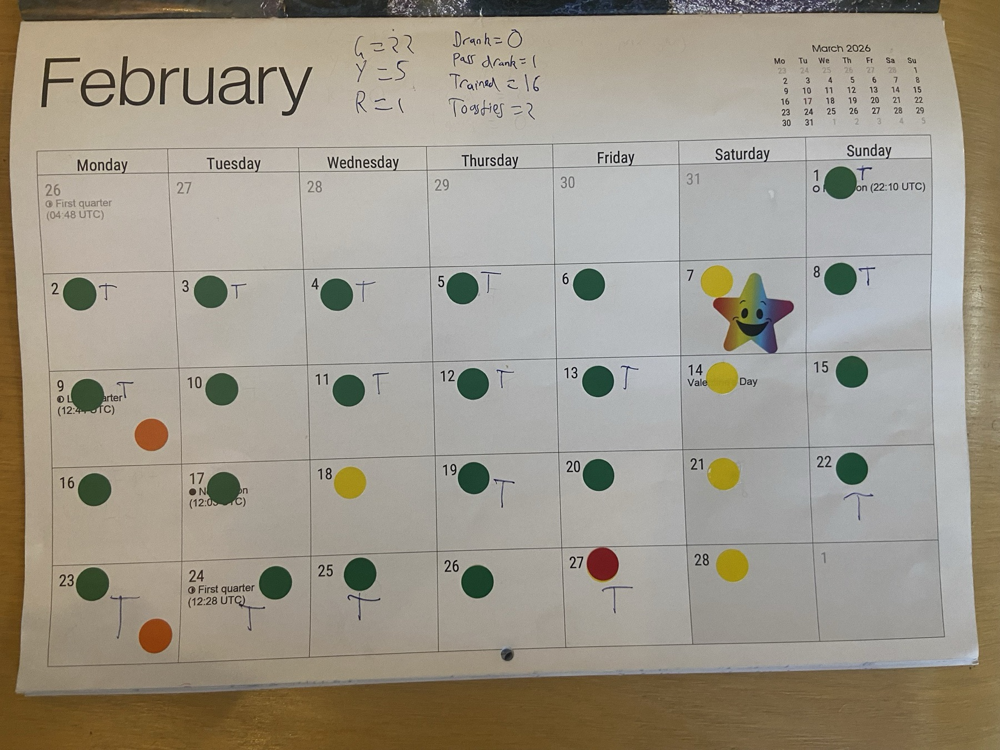

Why rate your days?
A big goal is made one day at a time. So make the day the goal.
A big goal takes months, and for most of that time there's no progress to see. You do the work and the number barely moves. That's frustrating, and it's where most people stop.
But the goal is made every day. So make the day the goal: do today the way you want to. That's something you can do tonight, and see tonight.
GreenEdge asks one question each evening: did you show up today the way you want to?
- Green: a good day. You acted the way you want to act.
- Yellow: not quite.
- Red: a setback. Tomorrow is a fresh start.
Keep having green days and, in time, you become the person you want to be.
There's no rulebook. Someone drinking less might call a dry day green. Someone training for a race might call it green for getting the run in. It's your own judgement, against your own standards, and it takes one tap.
Why not just track the result?
Most tracking looks at how you feel, or at what you got. Feelings come and go. Results move slowly, and they move for reasons that aren't you: a week of doing everything right can end with a number that says otherwise. If the number is all you track, that's the week you give up.
What sits between the two is what you did. That's the part you control, and it's what moves the results. Keep tracking the result if you like; this is the days that produce it.
What one tap a day gets you
Something you can win today. The result you're after may be months away. A green day is available tonight.
An honest record without the guilt. One red day doesn't break anything. It's one square among hundreds, and the trend is what counts: green days minus red days, week by week.
Evidence about what works for you. Add a tracker or two (drinks, training, sleep, anything) and after a few weeks GreenEdge shows what tends to go with your green days and what tends to go with the red ones. These are patterns in your own days, and they show what has gone together, which isn't proof of what caused what.
The link back to results. If your weight, sleep or activity is in Apple Health, GreenEdge sets it beside your days, so you can see how the numbers have lined up with the days behind them.
A habit that lasts. Most tracking stops because it becomes a chore. This is one tap, and nothing nags you to do it.
How it's different
- A mood tracker asks how you felt. You can feel flat and still have a green day.
- A habit tracker gives you a list of boxes and a streak to protect. GreenEdge asks for one judgement of the whole day, and you decide what counted.
- An outcome tracker shows the number. GreenEdge shows the days that produce it.
Where it came from
"I had big goals, and I found it frustrating to work towards them and see no progress. Then I realised a goal is made every day. So I stopped making the result the goal and made the day the goal: do today the way I want to. Keep doing that, and I see myself become the person I want to be."
That's GreenEdge's maker on why it exists. It began as a paper wall calendar: a colour for every day, and a small symbol for the things that seemed to matter. The app keeps that simplicity and adds what paper can't do: totals, trends and patterns.

GreenEdge isn't a medical app and doesn't give medical advice.